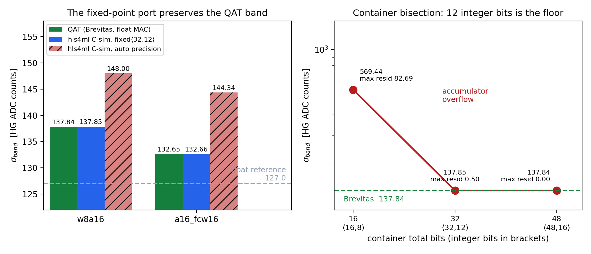

Introduction
Hello!! 👋 I am Bibhor Puhan a.k.a. XBastille. This summer I am working with the Tile Calorimeter group at IFIC in Valencia on the detector's energy reconstruction, through Google Summer of Code with CERN-HSF.
We are at the halfway mark. A good part of it works, there is 1 result I am happy about and cannot yet explain and a few conclusions shifted as the evidence came in. All 3 are below.
What the detector has to do
The Tile Calorimeter (TileCal) [2] measures the energy of hadronic showers. Light from scintillating tiles reaches photomultipliers and the pulse is digitised at 40 MHz. Each pulse spreads over about 7 samples and the readout has to pull 3 things out of it, the pedestal, the amplitude (proportional to deposited energy) and the phase.
The algorithm in the detector today is Optimal Filtering, a 7-coefficient linear filter. It is genuinely good under the assumption it was designed for, that the noise is stationary and Gaussian.
At the HL-LHC that assumption fails. With around 200 proton-proton interactions per bunch crossing (µ = 200) the dominant noise is no longer electronics, it is other collisions. Bunch crossings are independent events but the pulses last about 7 of them and overlap. So a bunch crossing whose true energy is zero can still show a large ADC value, purely from its neighbours bleeding in. That is out-of-time pile-up, it is not Gaussian and OF has no way to see it coming [3]. The quiet events turn out to be the tricky ones, which sounds backwards until you look at the data.
It is also why the network gets a 9-sample window rather than 7. It needs context on both sides of the crossing it is being asked about.
The constraint
If this were pure regression it would be easy. The catch is where the answer has to be computed.
Reconstruction runs in the TilePPr firmware on a Xilinx Kintex UltraScale FPGA
(xcku115-flva1517-2-e) and the model is instantiated once per channel. That
instantiation is what sets the size limit. 77 copies have to fit on a board nobody is going to replace.
The latency figure is easy to misread. TilePPr allots 225 ns, 9 bunch crossings, to energy reconstruction + sample delay, inside a 1.7 µs trigger budget. That is not 225 ns of compute. A 9-sample window takes 9 bunch crossings just to collect, so the budget is dominated by waiting for samples. What actually binds is throughput, an initiation interval of 1 bunch crossing, 25 ns, because at 40 MHz the data never stops arriving.
The data and the input that changed the project
Everything here is simulation, from the TileCal Pulse Simulator at µ = 200 [4], minimum-bias pile-up with a 5% flat signal injection biased toward high gain so the dynamic range is populated. About 230,000 consecutive bunch crossings (23 runs of 10,000), long-barrel A-layer cells A1 to A5, split 70 / 15 / 15. The 9-sample sliding window over the A1 to A5 channels turns that into about 71M kept windows, roughly 24% surviving the saturation, out-of-range and low-energy cuts. The published reference [1] was measured on single-cell A1, ours spans A1 to A5, a difference worth holding onto for the comparison later. Everything is in ADC counts, not GeV and there is no real data and no test beam yet.
TileCal reads every channel in 2 gains, high and low, separated by a factor of about 40. My first instinct was 2 input channels and 2 targets. It produced numbers.
In the meeting on 3 June, Alberto Valero suggested something better. Concatenate the gains into a single 24-bit integer per sample, high gain in the low 12 bits, low gain in the high 12 and regress 1 target. Luca formalised it as
S=HG+4096·LG
It is better for a reason worth stating carefully. A 2-channel design carries both gains but leaves the network to work out which one to trust and hands back 2 outputs to calibrate. The reference instead picks 1 gain per crossing and discards the other. The concatenated form does neither. Both gains survive intact inside 1 number, against 1 target, with nothing thrown away before the network starts. That is the largest architectural decision in the project and it was not mine.
Where things stand
The OF numbers below are not quoted from a paper. The OF weights ship with the simulation and the preprocessing applies them per window, so OF and the network are scored on identical bunch crossings under identical selection. A baseline evaluated on a different population is not a baseline.
The metric comes from Luca. A single standard deviation over the whole test set is misleading here, because most bunch crossings sit at very low energy, over half below 5 LG ADC, so a global number mostly measures how the model does on almost-empty events. Instead we bin by energy, take the standard deviation in each bin and report the mean of those. I call it the band. High-gain ADC counts, lower is better.
| Model | Parameters | Band (HG ADC) | Global std (HG ADC) |
|---|---|---|---|
| Optimal Filtering (deployed) | n/a | 890.6 | 979.2 |
| 91-param student, trained alone | 91 | 164.8 | 105.9 |
| 91-param student, distilled | 91 | 127.0 | 95.3 |
| 1005-param teacher | 1005 | 85.8 | 63.0 |
The deployable network is about 7 times tighter than the algorithm it would replace and distillation [5] from the larger teacher buys roughly 23% of band over training the same 91
parameters from scratch. That is the part I am pleased with, because 91 parameters is a brutal budget. The
teacher and the reconstruction pipeline went in as merge request !16, the 91-parameter student and
the distillation code as !17. The repository is ATLAS-internal, so I cannot link them here. I
presented these results to the ATLAS TileCal Data Preparation and Performance meeting on 6 July (slides).
2 caveats and they matter.
The IFIC group already has a published reference CNN at 147 parameters, quoted at 72.12 [1] and on high gain it beats ours. So why not just take theirs? It solves a slightly different problem. It picks one gain per crossing, LG x 40 where high gain saturates, discarding the other where ours keeps both, PReLU rather than a free bit shift, float, with no quantised version reported, 1 cell, where ours covers A1 to A5 with one set of weights and a different pipeline and sample. It sits at a different point on the same trade-off, and our 91 parameters may pay for that breadth.
I am also not claiming a win over 72.12. Read the code behind that number and it is a global standard deviation not a band, so the matched comparison is his 72.12 against our global, which is 95.3 for the 91-parameter student and 63.0 for the 1005-parameter teacher that is far too large to deploy. At a matched parameter budget he is ahead on high gain and I will leave it there. The populations differ too, his single-cell A1 against our A1 to A5. The number I would defend is low gain, our global 3.43 against his 8.36, where both are the high-gain-saturated events.
And the network is not magic. It beats OF because OF was built for noise that no longer exists.

Teacher and student are the same skeleton at 2 widths. 2 convolutions, 2 activations, 1 linear layer.
The kernel sizes matter, k5 then k3 gives the central crossing a receptive field of 7
of the 9 samples, roughly 1 pulse length. The activation is LeakyReLU(0.25), chosen because a
slope of 1/4 is a 2-bit shift and should therefore cost no multiplier in firmware. Worth checking
rather than assuming, so I read the HLS C++ that hls4ml generated.
// firmware/defines.h
typedef ap_ufixed<1,-1> param_t; // one bit, weight 2^-2: exactly 0.25
// firmware/myproject.cpp
nnet::leaky_relu<...>(layer57_out, 0.25, layer44_out);
// nnet_utils/nnet_activation.h
res[i] = (datareg > 0) ? datareg : alpha * datareg;
The slope survives as a compile-time literal in a 1-bit container, not a lookup table. Zero DSP cost stays an expectation until synthesis says otherwise.

One thing about the distillation worth stating (slides, 19 June), because the convention reads backwards at a glance. The loss is
loss=α·truth+(1−α)·teacher
so α weights the truth term, not the teacher and α = 0.3 is 70% teacher-matching. Worth saying out loud before anyone reads 0.3 as a light touch.
Making it fit in fixed point
Float32 is not going anywhere near an FPGA, so the second half of the project is quantisation-aware training
with Brevitas [6], export through QONNX [7]
to hls4ml [8, 9], then synthesis. The rest
of this section is the 10 July deck, compressed. Weight
width w, activation width a, band in high-gain ADC counts.

| Precision | Band (HG ADC) |
|---|---|
| w8 / a8 | 441 |
| w6 / a16 | 211 |
| w8 / a12 | 163 |
| w8 / a16 | 138 |
| w16 / a16 | 116 |
| float32 | 127 |
Plain 8-bit is unusable. For a while I blamed the concatenated input, since S=HG+4096·LG packs 4 orders of magnitude into 1 number and a per-tensor quantiser sets its scale by the large low-gain values, crushing the small high-gain-only signals. That story did not survive being tested. Feeding a 16-bit input while keeping 8 bits inside still bands and splitting the gains back into 2 channels barely moves it. What actually binds is the last activation. The output lands on roughly 2act bits levels spread across 0 to 4095, so 8 bits is about 256 levels, steps of about 16 ADC, which is exactly the banding you see at low energy. Genuinely different small inputs come back with identical predictions. No input transform adds output levels, which is why none of them helped.
One earlier conclusion changed here. I had told my mentors the weights were not the bottleneck, on the strength of 6-bit weights being worse than 8-bit. That sweep only ever went downward. The headroom turned out to be upward and going from w8 to w16 buys 22 ADC of band.
Then the row I keep staring at. The 16-bit quantised model at 116, beats the float32 model it was distilled from at 127. That is not supposed to happen. The obvious suspect was that the quantised runs also dropped the distillation teacher and finishing on pure truth is a known free improvement. So I ran the control, continuing the float model with the teacher off and everything else identical. It came back at 127.3. Teacher removal is ruled out, whatever is happening lives in the quantisation path and at 16 bits the rounding noise is 1 part in 65,000, so "quantisation noise regularises" is a weak story I do not believe yet. My best guess is the learned per-tensor input scale acting as a gain the float network lacks. A test that isolates it is queued.
One caveat. On a 106-parameter sibling of this student, changing nothing but the seed moved the band by 13.9 ADC, which is wider than the 11 ADC gap I am pointing at, so the band on its own cannot settle this. What keeps me interested is that the validation loss and the global sigma both move the same way and are far steadier across seeds. A second seed on the quantised run is queued as well. For now it is a number I like with a mechanism I cannot name.

On the export side, the hls4ml C-simulation now reproduces the Brevitas model bit-exactly, to 0.00 ADC. Left to itself hls4ml sizes the fixed-point containers automatically and the automatic choice was wrong, giving 148 against Brevitas's 138. Bisecting the container width shows a hard floor at 12 integer bits, below which the accumulator overflows and the band explodes to 569.
The residual that led me there is the real lesson. The training target is the low-gain energy and the high-gain view is that number times 40, so a residual of 1.27 low-gain ADC counts, which looks like nothing, shows up as 50.8 in the gain we actually report. That factor of 40 has now surfaced 3 separate times in 3 different disguises. I have started treating any small number in the target as a large number in waiting.
What did not work
Feature (hint) distillation, matching the student's intermediate layers to the teacher's, was Luca's suggestion. Worse. Teacher-assistant distillation, an intermediate model to bridge the capacity gap. Worse. Ensembling several teachers. Worse. At some point the accumulation stopped being disappointing and started being informative. The 91-parameter student is probably at its capacity floor, not its knowledge floor and no cleverness in how the teacher talks to it will move a wall made of parameters.
Last week I found a warm-start bug that silently dropped the learned activation scales when resuming from a checkpoint. The runs completed and produced plausible numbers. They were simply initialised wrong, so 2 experiments need re-running. The cause was a catch-all fallback that quietly absorbed the 1 case worth knowing about and the code now raises instead of coping, because a crash costs seconds and a silent fallback costs GPU hours.
That is the shape of every real bug this summer, the gain-mixing one, the fixed-point container, the warm start. None of them crashed. All of them produced a plausible number. "It ran" is not evidence of anything.
What is left
Synthesis, first. There are no DSP, LUT or flip-flop numbers yet, which means I do not actually know that this fits and I am wary of any claim that skips that step. Fernando has given me access to a machine with Vivado.
Then a decremental quantisation sweep, stepping 16 to 12 to 8 and warm-starting each run from the previous quantised checkpoint rather than from float. Fernando's framing has stuck with me. A single 91-parameter model is trivially small. 77 of them and more cells later, is not and every flip-flop saved per neuron gets multiplied by a number that keeps growing.
Fernando has also asked for something I like more than the sweep. Rather than imposing a precision, make the weight and activation bit widths trainable and warm-start from w16 / a16, so the network picks its own precision per layer instead of having one handed to it. Left to itself it has no reason to give anything up and the widths just sit near 16, so I formulated the technique as
loss=task+λ·Σ bits
where λ sets how hard the network is pushed to trade precision for resolution. The sweep tells you what a uniform width costs. This tells you where the bits actually need to be.
After that, truncating the output word for the trigger link after the compute rather than by narrowing the last layer during training, pole-zero correction for the baseline droop after large pulses and eventually Athena.
One thing from the first half is worth passing on. The most useful thing anyone did for me was settle the metric before there were results to argue about. Left to myself I would have reported the global standard deviation, which is what any training script hands you by default and also the number that flatters this model hardest. Choosing how you will be judged, before you can see which choice makes you look better, turns out to be most of the work.
Thanks
To Luca Fiorini and Fernando Carrió, generous with their time and precise with their corrections. To Alberto Valero for the input encoding that reshaped the project. To Francesco Curcio, whose work is the reference I measure against. And to CERN and the IFIC group for the compute, the access and the patience.
The synthesis numbers are next and they are the ones that decide whether any of this is deployable. I will update this on the next blog when they land!!
References
- F. Curcio, on behalf of the ATLAS Tile Calorimeter system, Machine Learning-Based Energy Reconstruction for the ATLAS Tile Calorimeter at HL-LHC, SciPost Phys. Proc., EuCAIFCon 2025.
- ATLAS Collaboration, The ATLAS Experiment at the CERN Large Hadron Collider, JINST 3 (2008) S08003.
- D. Oliveira Gonçalves, on behalf of the ATLAS Collaboration, Energy reconstruction of the ATLAS Tile Calorimeter under high pile-up conditions using the Wiener filter, J. Phys. Conf. Ser. 1525 (2020) 012092.
- ATLAS Collaboration, Approved plots, Tile Calorimeter upgrades.
- G. Hinton, O. Vinyals and J. Dean, Distilling the Knowledge in a Neural Network, arXiv:1503.02531.
- Xilinx, Brevitas, a PyTorch library for quantisation-aware training.
- A. Pappalardo, Y. Umuroglu et al., QONNX: Representing Arbitrary-Precision Quantized Neural Networks, arXiv:2206.07527.
- J. Duarte, S. Han et al., Fast inference of deep neural networks in FPGAs for particle physics, JINST 13 (2018) P07027.
- T. Aarrestad, V. Loncar et al., Fast convolutional neural networks on FPGAs with hls4ml, arXiv:2101.05108.